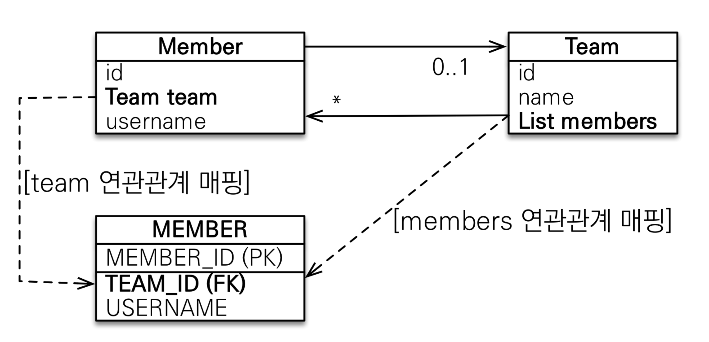
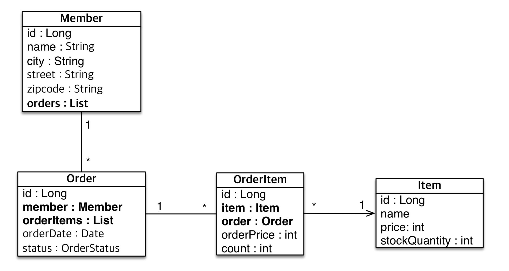

List<Member> members 필드를 추가
@OneToMany(mappedBy = "team") 애노테이션 필요
객체 연관관계 : 2개
테이블 연관관계 : 1개

외래 키가 있는 곳을 주인으로 정해라(= N:1 관계에서 N 쪽)
예시
연관관계의 주인은 비즈니스적으로 중요한 개념은 아님
Team team = new Team();
team.setName("teamA");
team.getMembers().add(member);
em.persist(team);
Member member = new Member();
member.setUsername("member1");
em.persist(member);
em.flush();
em.clear();
tx.commit();
team.getMembers().add() 로 Member를 리스트에 추가해도 DB에는 MEMBER의 TEAM_ID에 FK가 들어가지 않음 (1)
member.setTeam() 으로 Member에서 Team을 참조해야 MEMBER테이블에도 정상적으로 반영됨 (2)
∵ 연관관계의 주인은 Member이기 때문에, (1)은 DB에 영향을 주지 못함
(1)을 하지 않더라도 JPA는 지연 로딩을 통해 연관된 Member의 목록을 조회할 수 있음
getMembers()에서 조회되지 않을 수 있음
객체 관계를 고려하면 (1), (2) 모두 해주는 것이 맞음
Team.addMember(Member member) 또는 Member.changeTeam(Team team) 등 상황에 따라 택1
toString(), lombok, JSON 생성 라이브러리toString()에서 참조하는 객체가 다시 toString()을 호출하는 경우

@JoinColumn)회원의 주문 목록을 가져올 경우
List<Order>로 주문 목록을 가져오고 있다면, 관심사를 제대로 끊어내지 못한 것일 수 있음
주문은 연관된 상품 목록을 필요로 할 확률이 높음
Member.orders, Order.orderItems는 없어도 문제 없음